01
Project
Digital Treatment Journey
Healthcare UXAI-supported careExploring how a digital healthcare product can make an ongoing treatment journey clearer, easier to navigate, and less overwhelming from understanding today's next step to accessing the right support.
Know what comes next.
One clear action at a time
Guidance with human support
A treatment journey can include onboarding, medication, follow-ups, progress tracking, questions, and decisions. This concept explores how those moments might feel more connected through one patient-centered experience.
Digital Treatment Journey
Healthcare UXAI-supported careIndependent Product Designer exploring research, information architecture, user flows, and early feature concepts.
Product designUX researchHelp patients understand their current treatment stage, what to do next, how progress is changing, and where to find appropriate support.
ClarityContinuityUnderstand how digital healthcare platforms guide patients through onboarding, treatment, medication, progress tracking, check-ins, and communication with care teams then identify opportunities to make these experiences clearer and more connected.
I explored three healthcare products to understand their scope, how they support patients over time, and what their approaches can teach a designer about complex healthcare journeys.
A full-stack AI healthcare vision centered on an AI doctor, with healthcare delivery, clinical workflows, treatment access, and consumer-facing experiences.
AI-native careComplex workflowsResearch focus: public company information and the publicly described Product Designer role.
A digital healthcare platform focused on metabolic health, using its Digital Twin approach to translate health data into personalized guidance and ongoing support.
PersonalizationProgress trackingResearch focus: public product information about the app, personalized guidance, and care-team support.
An AI Care platform supporting different health journeys, including musculoskeletal, women's, cardiometabolic, and mental health.
Ongoing careScalable experienceResearch focus: publicly described care model and patient-facing digital experiences.
| Research area | AIOS Medical | Twin Health | Sword Health |
|---|---|---|---|
| What does it build? | Full-stack AI healthcare platform centered around an AI doctor. | AI-powered digital healthcare focused primarily on metabolic health. | AI Care platform across several physical and mental health areas. |
| Primary users | Healthcare consumers/patients, with broader clinical and operational workflows. | People managing metabolic health and related chronic conditions. | People seeking support for physical and mental health conditions. |
| Patient-facing experience | Customer-facing web/mobile experiences, treatment access, and customer app flows. | App-based health monitoring, personalized guidance, progress, and care-team access. | Digital care experiences with personalized support and ongoing care. |
| Role of AI | AI is central to its healthcare delivery vision and clinical workflows. | Health data is used to provide personalized insights and guidance through a Digital Twin approach. | AI is a core part of the Care platform and supports personalized healthcare experiences. |
| AI + human care | Automation is designed within healthcare and clinical workflows. | AI-supported guidance works alongside doctors, coaches, and healthcare professionals. | AI-powered care is combined with clinical support when appropriate. |
| Design takeaway | Simplify complex workflows, build trust, and make AI-human handoffs understandable. | Translate complex health data into clear, personalized guidance. | Organize multiple care journeys into a consistent, patient-centered experience. |
This comparison summarizes publicly described positioning and product information. It is not a feature-by-feature usability evaluation, and the products' internal workflows are not assumed to be publicly visible.
Across the three products, I identified recurring themes that could guide the design of a clearer treatment journey.
Healthcare information and workflows need to become understandable actions, not more information for patients to interpret alone.
Patients may need support between consultations: reminders, check-ins, progress context, and clarity about what happens next.
AI-supported guidance should communicate its limits and help people reach qualified human support when needed.
Relevant health context can make guidance more useful, while privacy, consent, and clear explanations remain essential.
Milestones, completed actions, and upcoming steps can help patients understand where they are in a longer journey.
A product needs consistent navigation and patterns while allowing care journeys to differ by condition and treatment plan.
The concept focuses on the patient-facing treatment journey rather than attempting to design an entire healthcare platform.
Patients using digital healthcare services can find it difficult to understand their overall treatment journey, know what they need to do next, and navigate between AI guidance and human support.
Helping patients understand their current treatment stage, identify their next steps, receive understandable guidance, track progress, and access appropriate support.
Current treatment status, today's important actions, and a clear next step.
Current stage, completed milestones, and upcoming steps.
AI-supported information, recommendations, and understandable explanations.
Treatment progress, relevant health information, trends, and milestones.
Ways to contact the care team, get help, and reach human support.
Additional ideas such as prescription uploads, medication, medical files, and family health profiles.
The navigation prioritizes everyday actions first, while keeping treatment, progress, guidance, and care support easy to find.
A simple, repeatable loop helps patients understand what to do, complete an action, and return to the journey with updated context.
The following nine features extend the core treatment journey into practical patient needs. Each feature includes three vertically scrollable image slots.img folder.
Let patients upload a prescription and keep it connected to their treatment information, reducing the need to search across chats, folders, and paper documents.
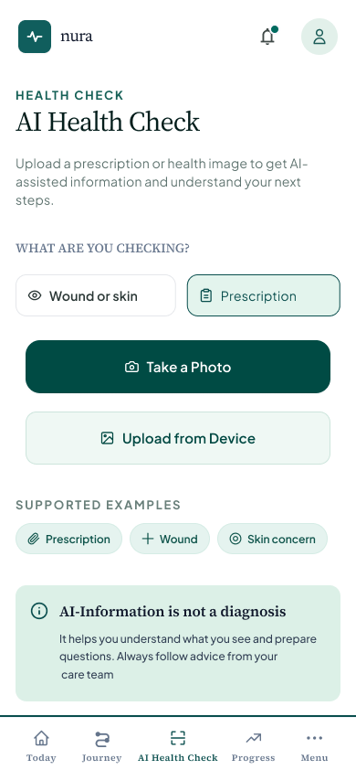
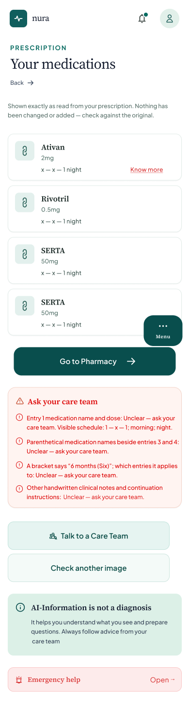
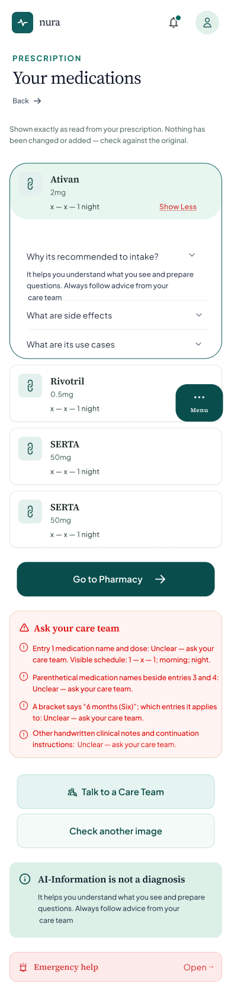
Concept-level suggestions only. Final choices depend on region, privacy requirements, clinical validation, and available partners.
Allow patients to capture and upload photos of wound healing or skin conditions to track changes over time and share visual updates securely with their care team.
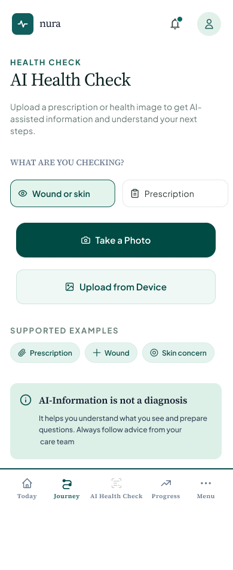
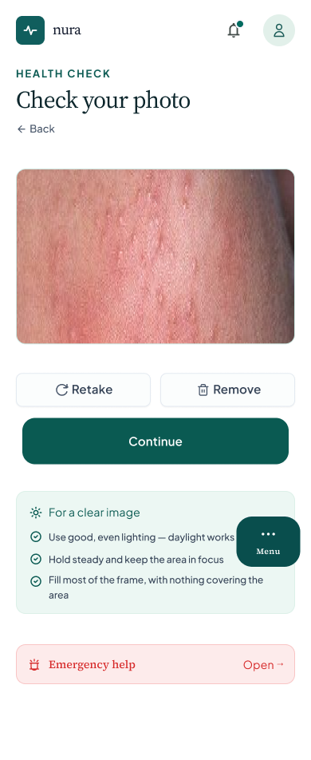
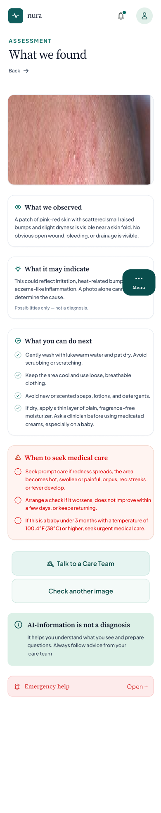
Concept-level suggestions only. Final choices depend on region, privacy requirements, clinical validation, and available partners.
Users can add trusted family members or emergency contacts so they can quickly reach them during an emergency.

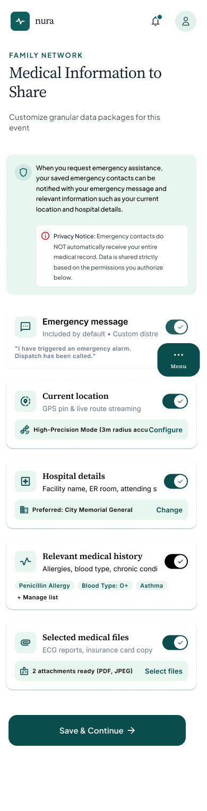
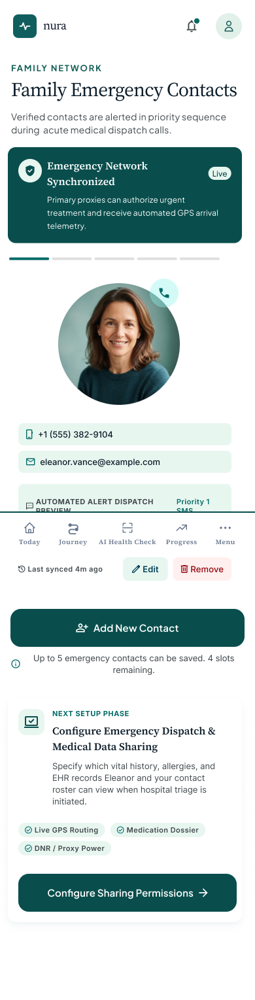
Concept-level suggestions only. Final choices depend on region, privacy requirements, clinical validation, and available partners.
A dedicated emergency option that allows users to quickly contact ambulance or emergency services when urgent assistance is required.
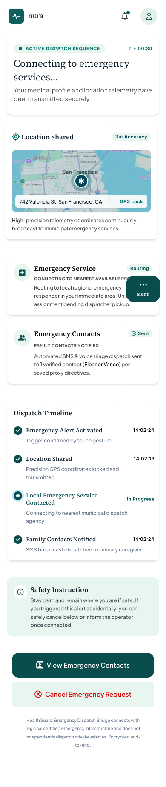
Concept-level suggestions only. Final choices depend on region, privacy requirements, clinical validation, and available partners.
Users can purchase their prescribed or eligible medications directly through the app. The pharmacy feature can allow users to search for medicines, view medication details, upload or connect prescriptions, add medicines to their cart, and place orders for delivery.
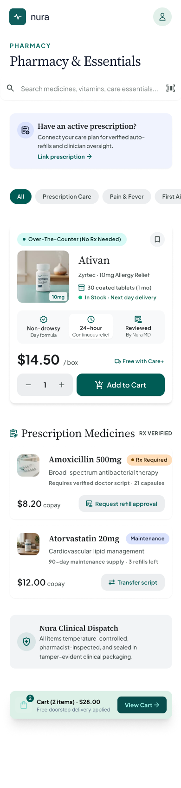
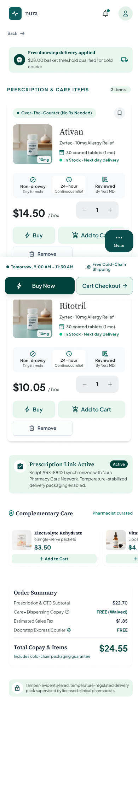

Concept-level suggestions only. Final choices depend on region, privacy requirements, clinical validation, and available partners.
An AI-assisted guidance feature where users can ask about common health concerns and receive understandable information and possible next steps. Examples could include menstrual cramps, knee or joint pain, and nutrition-related questions.
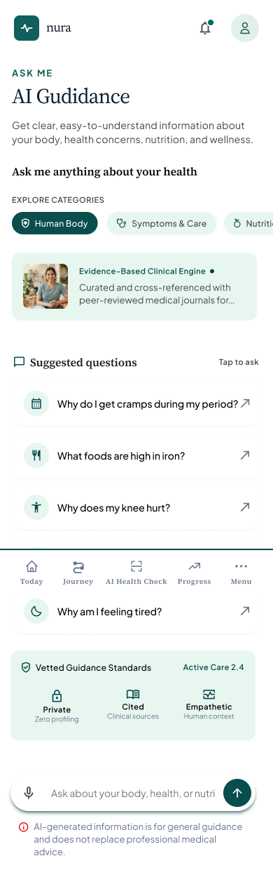
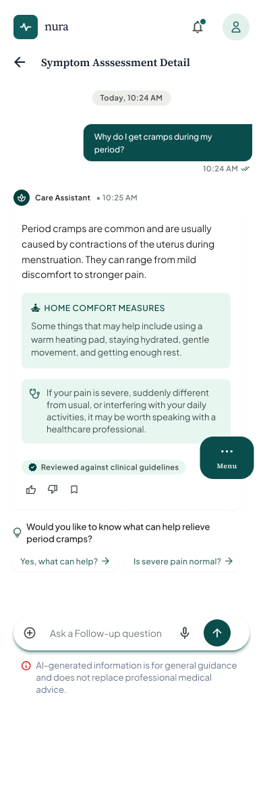
Concept-level suggestions only. Final choices depend on region, privacy requirements, clinical validation, and available partners.
The experience can provide general food and nutrition suggestions based on the user's health-related questions and goals, while clearly distinguishing general guidance from personalized medical advice.


Concept-level suggestions only. Final choices depend on region, privacy requirements, clinical validation, and available partners.
Help people keep family health information organized through separate profiles, with carefully managed access for trusted collaborators.
.png)
.png)

Concept-level suggestions only. Final choices depend on region, privacy requirements, clinical validation, and available partners.
Users can securely upload and organize important medical documents such as reports, prescriptions, test results, and other health-related files.
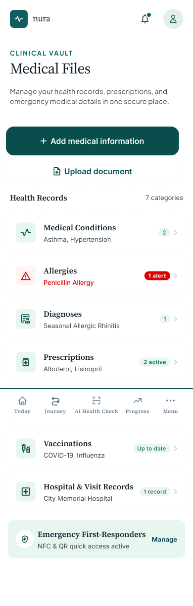


Concept-level suggestions only. Final choices depend on region, privacy requirements, clinical validation, and available partners.
Image setup: place your own files inside a folder named img beside this HTML file. Keep the filenames shown under each image slot, or update each src value to match your files. PNG, JPG, and WebP files work in modern browsers.
Healthcare design needs to account for moments when people may feel worried, rushed, or unfamiliar with medical language. The interface should make information and actions easier to understand, while respecting the limits of digital guidance.
Make the current status and next step easy to understand.
Explain what AI can and cannot do, and make uncertainty visible.
Help people understand their choices and manage their information.
Make appropriate clinical or emergency support easy to find.
Use plain language, readable type, and accessible interactions.
Connect actions, progress, records, and support over time.
The next step is to validate these assumptions with patients and healthcare professionals, prioritize the most valuable feature, and test early prototypes for clarity, accessibility, and trust.
This project represents my current understanding and exploration of the problem space. I am open to feedback, new evidence, and adapting the research or design direction to real product needs.